When Light Reflects
Oh!
The scorching sunlight
is coming through the
window! Close the
curtain dear…
But the
window is closed!
Then how can the
sunlight enter the
room?
This is the doubt expressed by a little girl.
You know that the light can enter the room through glass window even if it is
closed.
Why did grandma ask the girl to close the curtain when light entered the
room through the window?
What are the things that can be used instead of a curtain to prevent sunlight
from entering a room through a glass window? List them.
Let’s find out through an experiment.
Page 63
Class - VII
Point a lighted torch at different objects such as scratched glass sheet, glass
filled with pure water, wooden block, a piece of cloth, white paper, black
chart paper, butter paper, window glass, a coin, a mirror, a piece of reading
glass, marble, polythene cover and a colourless plastic bottle.
What do you observe? Record your observations in the Science Diary.
Objects that
transmit light
Objects that do not
transmit light
Window glass
Wooden block
There are substances that transmit light and substances that do not transmit
light.
Objects that Transmit Light
Didn’t light pass through the butter paper? What about the glass used in
spectacles? Do both of these substances transmit light in the same manner?
Record it.
Repeat the experiment using butter paper, window glass, scratched glass
piece, oiled paper, glass piece, polythene cover, pure water taken in a glass
tumbler and colourless plastic bottle.
On the basis of the experiment, classify them as those which transmit light
completely and those which transmit light partially.
Objects which transmit light
completely
Objects which transmit
light partially
●
●
●
●
●
●
●
●
63
Page 64
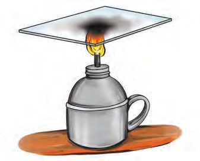
Figure fig_ch04_p064_01 (Page 64)
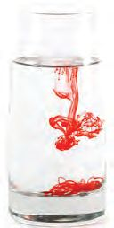
Figure fig_ch04_p064_02 (Page 64)
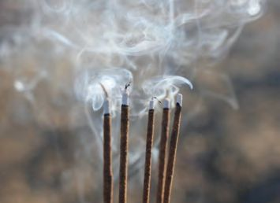
Figure fig_ch04_p064_03 (Page 64)
Basic Science
You have found that there are three types of objects based on transmission of
light.
Transparent Object, Translucent Object and Opaque Object
Objects that transmit light very well are called transparent objects. Objects
which transmit light partially are called translucent objects. Objects which
do not transmit light are opaque objects.
Repeat the experiment using more objects. Classify them as transparent,
translucent and opaque objects and record them in the Science Diary.
Converting Transparent Object into Opaque Object
Can you change a transparent glass sheet into a
translucent or opaque one? How? Discuss. What
methods can you suggest? Record them in the
Science Diary.
Make a transparent glass sheet sooted as shown
in the figure. What change do you observe?
What happens to the light transmitting property
of transparent glass sheet when it becomes
sootier? Do an experiment to find it out.
What other methods can be adopted to make the glass sheet translucent or
opaque? Write down your suggestions in the Science Diary.
You have found that pure water is transparent. What about air?
Can we convert pure water and air to translucent? Design an experiment for
this.
Pay attention to the clues in the following pictures.
You can use ink and incense stick for doing this activity.
64
Page 65
Figure fig_ch04_p065_01 (Page 65)
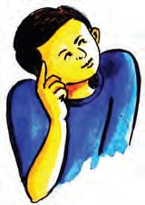
Figure fig_ch04_p065_02 (Page 65)
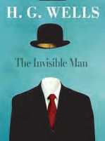
Figure fig_ch04_p065_03 (Page 65)
Class - VII
What other substances can you use for this? Design an experiment using the
materials you have identified.
Record the details and findings of the experiment in your Science Diary.
Haven’t you understood that some transparent substances can be converted
to opaque substances?
Transparency and Opacity of Objects in Daily Life
We have understood the difference in transmission of light by different objects.
How does the opacity and transparency of objects benefit us?
How do you know when the ink in a refill pen is completely used up?
Don’t you use oil paper to trace pictures and maps?
Imagine the situation if the walls and doors of houses were transparent!
Haven’t you realised that we utilise the transparency, opacity and translucency
of objects in everyday life?
Find out more situations through group discussion and present them in the
class.
Situations in which transparent
•
•
objects are used
Situations in which translucent
objects are used
•
•
Situations in which opaque objects
are used
•
•
Suppose if
the human body
is transparent
For Further Reading
The Invisible Man
‘The Invisible Man’ is a famous
science fiction by the English writer
H.G. Wells. Griffin, a scientist, is a
character in the novel. Griffin's
body becomes transparent as a result of his
experiments. This novel portrays the
experiences of Griffin who became invisible.
65
Page 66
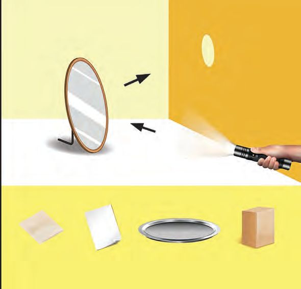
Figure fig_ch04_p066_01 (Page 66)
Basic Science
Can you write a science fiction with a transparent man or any other organism
as a character?
The Light that Returns
We have understood that some objects are transparent and some are opaque.
What happens when light falls on opaque objects?
Dim the light in your class room by closing the doors and windows. Hold a
mirror facing the wall and let the light from a torch fall on it. What happens to
the light? Haven’t you noticed that the light rays fall on the wall after hitting
on the mirror? Repeat
the
experiment
by
holding the following
Screen
objects against the wall
and allowing light from
the torch to fall on each
of them.
Materials required:
smooth tile, new steel
plate, bronze,
hardboard, paper,
wooden block.
Record your
observations in the
table given below.
Torch
Mirror
Smooth Tile
Paper
New Steel
plate
The object on
which light fell
Difference in the returning of
light after falling on the surface
Mirror
Light returns well
Paper
Very little light returns
66
Wooden
block
Page 67
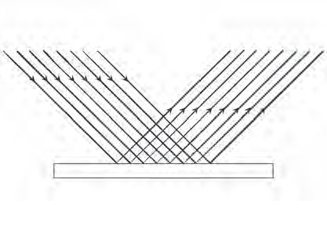
Figure fig_ch04_p067_01 (Page 67)
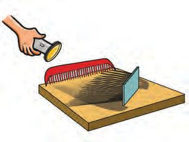
Figure fig_ch04_p067_02 (Page 67)
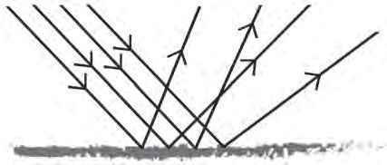
Figure fig_ch04_p067_03 (Page 67)
Class - VII
Reflection of Light
Reflection of light refers to the returning of light when it strikes on an object.
Touch and feel the surfaces of the objects which reflect light very well. What
do you feel?
What about the surfaces of objects that do not reflect light much?
Haven’t you found that smooth surfaces reflect light very well and that it is
less in the case of rough surfaces?
Why is it that rough surfaces cannot reflect light well?
The reflection of light from a mirror and a sand paper are depicted below.
Analyse the figures and write the inferences.
Mirror
Sandpaper
Doesn’t the light that fall on the mirror undergo a
regular reflection? What about the light falling on
the sandpaper?
Arrange a comb, a torch, a mirror and a sheet of
A4 size paper as shown in the figure and light the
torch. Observe the regular reflection of light.
Regular Reflection and Diffused Reflection
Light falling on smooth surfaces reflects with regularity. This is regular
reflection. Mirrors give a regular reflection.
When light falls on rough surfaces, it gets scattered in different directions.
This is irregular reflection or diffused reflection.
67
Page 68
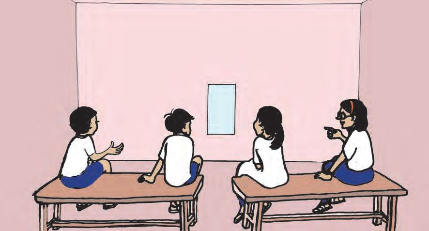
Figure fig_ch04_p068_01 (Page 68)
Basic Science
When Light Reflects
Kick a ball to a particular point on a wall from different places. Doesn’t the
ball hit the wall and bounce back? Does it always bounce back in the same
manner? Similarly, are there any peculiarities in the light rays falling on and
bouncing off a mirror? Let’s examine. Observe the figure.
The figure given below shows four children sitting at equal distances on two
benches in front of a mirror. Listen to their conversation.
I see Riya
through the
mirror.
No, Megha is
there on the
mirror.
I see Nikhil.
But I see Anu.
1
2
3
4
Anu
Nikhil
Megha
Riya
Why is it that the child who is sitting first can’t see those sitting at the second
and the third positions? Similarly, why can’t the other children see all others
through the mirror?
Write down your assumptions in the Science Diary.
Let’s do an experiment using some materials in the Science Kit to verify the
assumptions.
Materials required: A small piece of mirror, a protractor made as shown in
the figure, a transparent plastic box, double-sided tape, laser torch, an incense
stick and a match box.
Fix the small piece of mirror on one side of the transparent plastic box using
the double sided tape. Fill up the box with smoke from the incense stick.
68
Page 69
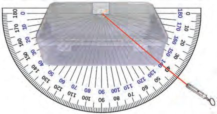
Figure fig_ch04_p069_01 (Page 69)
Class - VII
Small piece of mirror
Point where light
falls
Laser torch
Normal
Arrange the protractor you have made under the plastic box as shown in the
figure. Draw a perpendicular line from this protractor to the mirror at an angle
of 900. This is the normal. Allow the light from the laser torch to fall through
different angles of the protractor on the point where the normal touches the
mirror. Observe the reflected light. Measure the angle between the ray of light
from the laser torch and the normal. Similarly measure the angle between the
reflected ray of light and the normal. Record them in the table.
Angle between the light ray
from the torch and the normal
400
Angle between the reflected
light ray and the normal
550
700
Analyse the completed table. Is there any relation between the angle made by
the light ray from the torch with the normal and the angle made by the
reflecting light ray with the normal?
on
ra
y
ed
ct
fle
Re
gl
An
An
in
gle
of
re
fle
cti
e
nc
f
eo
y
ra
e
cid
nt
de
ci
In
You have seen the light ray falling on the mirror and the reflected ray. Observe
the diagram given below.
The ray of light falling on the
Normal
mirror is the incident ray. The
point at which the incident ray
falls on the mirror is the point of
incidence. The line drawn
perpendicular to the mirror at the
point of incidence is the normal.
The light ray reflecting from the
mirror is the reflected ray.
Plane mirror
69
Page 70
Figure fig_ch04_p070_01 (Page 70)
Basic Science
Angle of Incidence and Angle of Reflection
The angle between the incident ray and the normal is the angle of
incidence. The angle between the reflected ray and the normal is the
angle of reflection.
What did you find out regarding the reflection of light from the experiment
you have conducted?
You also have to know the concept of plane to understand more about the
laws of reflection.
Plane
The two sheets of paper inserted into each other are
on two planes. Each wall in your classroom is a plane.
We will learn more about planes in higher classes.
Laws of Reflection
• The angle of incidence and the angle of reflection are equal.
• The incident ray, the reflected ray and the normal at the point of
incidence are on the same plane.
Light and Sight
In the previous class we have learnt that we see
objects when their images are formed on the
retina of our eye.
Observe the picture. The light from the bulb
reaches the book and the eye. How does light
reach the eye so that we see the book? Observe
the picture showing the path of the light ray
from the bulb falling on the book and reflecting
to our eyes. Complete the flow chart.
Bulb
Light
Light
70
Source of
light
Eye
Object
Page 71
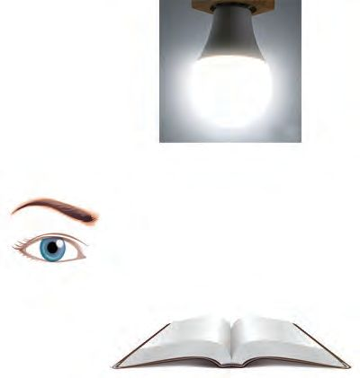
Figure fig_ch04_p071_01 (Page 71)
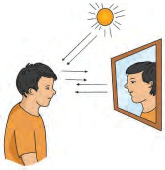
Figure fig_ch04_p071_02 (Page 71)
Class - VII
Haven’t you understood that we see a book when
the light falling on it gets reflected and reaches our
eyes? But we see a glowing bulb when the light
from the bulb reaches our eyes directly.
Source of
light
Eye
How Do We See Things?
We see an object when light coming from
any source of light falls on that object, gets
reflected and reaches our eyes. But we see a
source of light when the light from it reaches
our eyes directly.
Object
Don’t we see many beautiful sights every day? How are these sights possible?
Haven’t you understood that we see all sights on Earth due to the reflection of
light?
Plane Mirror and Image
Why can’t we see our own face?
We see objects when the reflected light reaches
our eyes. Will the light falling on our face get
reflected to our eyes?
What is the device we use to see our face? What
are the different surfaces from which light gets
reflected and reaches our eyes while seeing our
face in the mirror?
Observe the figure and identify the path of
light. Complete the flow chart and record it in
the Science Diary.
Sun
Light
Reflected
Light
Reflected
light
On which surfaces other than the mirror, can you see your face?
•
71
Eye
Page 72
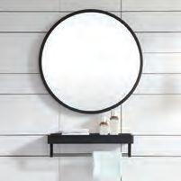
Figure fig_ch04_p072_01 (Page 72)
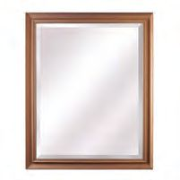
Figure fig_ch04_p072_02 (Page 72)
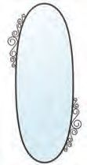
Figure fig_ch04_p072_03 (Page 72)
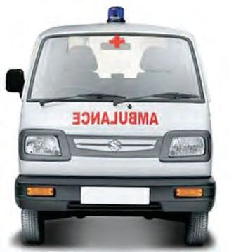
Figure fig_ch04_p072_04 (Page 72)
Basic Science
Look at the picture below. Haven’t you seen mirrors of different shapes?
What are the peculiarities of the surfaces of these mirrors?
A mirror with a flat surface is a plane mirror. We can see our images in plane
mirrors. Stand before a plane mirror and raise your left hand. Which hand of
the image is raised? Write down your name in English using capital letters on
a white paper and show it in front of the plane mirror. Can you read your
name in the mirror?
If so, how should the word BASIC SCIENCE be written on a paper so as to
read it on a plane mirror?
Try to write down the names of your friends in such a way that you can read
it correctly from a plane mirror.
On which side of the image will a mole on one’s left cheek be seen?
What property of the image formed in the plane mirror can be understood
here?
Lateral Inversion
In a plane mirror, the left side of an object appears as the right side of the
image and the right side of the object appears as the left side of the image.
This phenomenon is lateral inversion.
Haven’t you seen this vehicle? What would be the reason for writing like this
on the vehicle? Discuss and record it in the Science
Diary.
Distance to the Image
Stand in front of a plane mirror. At what distance is
your image seen?
Move a little forward and backward. Doesn’t the
position of the image also change?
72
Page 73
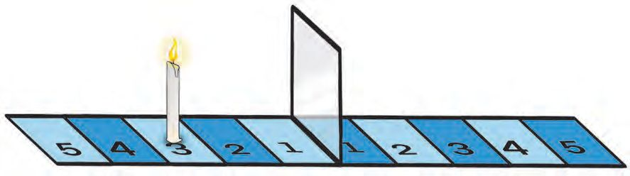
Figure fig_ch04_p073_01 (Page 73)
Class - VII
If we take reflective glasses used in windows instead of plane mirror, we can
measure the distance of an object from the mirror and the distance to the
image from the mirror. Let’s do an experiment.
Fix a reflective glass vertically on a table using a double sided tape.
Tear an A4 size paper lengthwise into two pieces. Draw lines at equal distances
on both pieces of papers and mark the numbers 1 to 5 on each. Place the
papers in front of and behind the reflective glass as shown in the figure.
Place a lighted candle at the area marked 3 as shown in the figure.
Place a coin at the area marked 3 on the other side. What will be the position
of the image formed on the mirror? Repeat the experiment by placing the
candle at different positions. Move the coin to the positions where the images
are seen.
Is there any relation between the distance to the object from the mirror and
the distance to the image from the mirror? Record your inference in the Science
Diary.
Size of the Image
Repeat the activity you have done using another candle of the same size. Place
each candle at position 3 on both sides. If you look at it from one side, don’t
you see both the reflection and the candle on the other side at the same
position? Observe the sizes of both. Compare the size of the object and the
image by changing the position. Record it in the Science Diary.
Light up the candle on one side of the mirror. Measure the height of the candle
upto the tip of the flame using a scale. Similarly, measure the height of the
image on the other side with the help of your friends. Repeat the experiment
by changing the size of the candle. Do the object and the image have the same
size?
73
Page 74
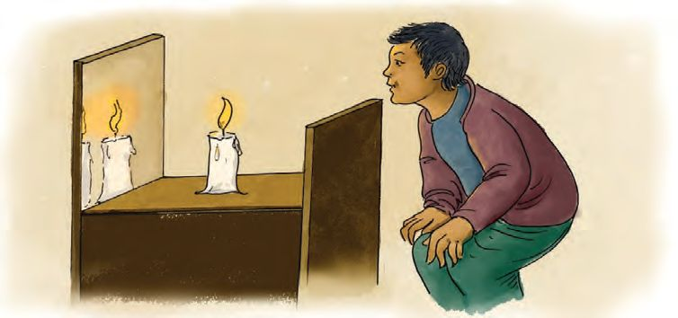
Figure fig_ch04_p074_01 (Page 74)
Basic Science
Characteristics of Images in a Plane Mirror
• The image undergoes lateral inversion.
• In a plane mirror, the distance between the object and the mirror is
equal to the distance between the image and the mirror.
• In a plane mirror, the size of the object will be equal to the size of the
image.
Number of Images
So far we have discussed the features of the image formed in a plane mirror.
When a burning candle is placed in front of a plane mirror, we get only one
image. How many images will you see if a burning candle is placed in between
two parallel plane mirrors? What is your assumption? Write it in the Science
Diary.
Let’s do this experiment using the following materials.
A wooden block sized 6 inch x 4 inch x 1 inch/small box, small candle, match
box, two plane mirrors of different heights having the same breadth as that of
the wooden block, double-sided tape.
Using the double side tape, fix the mirrors on either side of the wooden block
in such a way that their reflecting surfaces come face to face. Place the lighted
candle in between the mirrors on the wooden block.
Observe it from the side of the short mirror. How many images do you see on
the mirror on the opposite side?
Why do we see such a large number of images?
74
Page 75
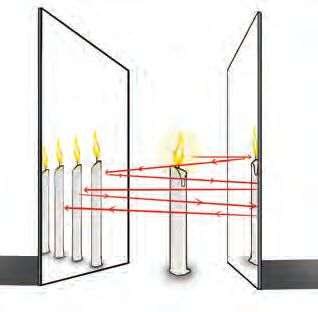
Figure fig_ch04_p075_01 (Page 75)
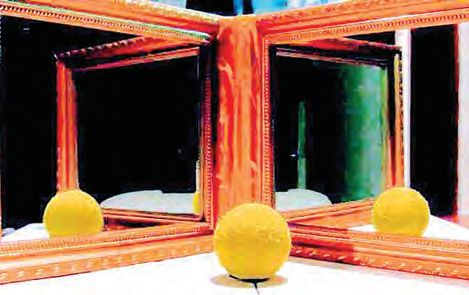
Figure fig_ch04_p075_02 (Page 75)
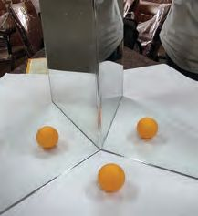
Figure fig_ch04_p075_03 (Page 75)
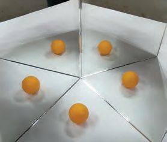
Figure fig_ch04_p075_04 (Page 75)
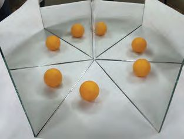
Figure fig_ch04_p075_05 (Page 75)
Class - VII
Multiple Reflection
A large number of images of the lighted candle
placed in between the parallel mirrors are
formed due to multiple reflection of light.
Repeat the above experiment using some
other materials and pictures instead of candle.
Observe the images. Won’t you be able to
create images of endless railway lines and
rows of flowering trees?
The picture given depicts a situation
involving multiple reflection in
daily life. Find more examples.
• Barber shop
•
Angle between the Mirrors and the Number of Images
Let’s do an experiment. Glue two plane mirrors of equal size together with
cellotape as shown in the above figure. Place a small ball in the middle and
observe the number of images formed. Change the angles in between the
mirrors. Observe whether there is a change in the number of images formed.
Make a protractor and place it below the mirrors
as shown in the figure. Find out the angle between
the mirrors and the number of images formed
and complete the table.
Angle
Number of images
300
600
5
900
1200
Is there any relation between the angle between the mirrors and the number
of images formed?
What happens to the number of images when
the angle between the mirrors increases?
What if the angle decreases? Note the inferences
in the Science Diary.
Illusions in the Mirror
Shall we make some interesting devices with
mirrors that make use of the principle of multiple
reflection?
1.
For Further Reading
Angle and the
number of images
If the angle is x, then
the number of images
is 360 − 1 .
𝑥𝑥
Kaleidoscope
Materials required: Three plane mirror pieces of
6 inch x 2 inch, insulation tape, transparent plastic
sheet.
Method of construction: Using the insulation tape, fix the three plane mirrors
in a triangular pattern as shown in the figure. Cover one of the open ends with
the transparent plastic sheet using the insulation tape. Put some coloured
bangle pieces or beads inside this device and observe. What do you see?
76
Page 77
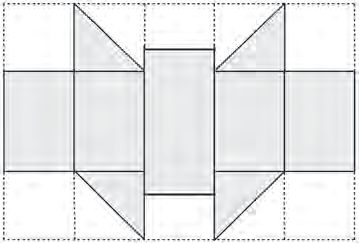
Figure fig_ch04_p077_01 (Page 77)
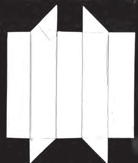
Figure fig_ch04_p077_02 (Page 77)
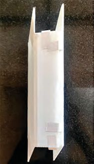
Figure fig_ch04_p077_03 (Page 77)
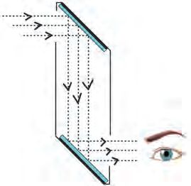
Figure fig_ch04_p077_04 (Page 77)
Class - VII
Tilt the device and enjoy the different patterns.
We can also make a kaleidoscope using three plastic scales of the same size.
2.
Periscope
Materials required: A cardboard piece of size 25 cm x 30 cm, two plane mirror
pieces of size 3 inch x 2.5 inch (Sunpack sheet can also be used instead of
cardboard piece).
A
B
C
D
E
5 cm
20 cm
5 cm
25 cm
Figure - 1
Figure - 2
Figure - 3
Method of construction
Stage 1 :
Cut a cardboard/sunpack sheet of size 25 cm x 30 cm.
Stage 2 :
Draw lines on it with the same measure as shown in Figure 1.
Stage 3 :
Cut off the unshaded parts of the figure along the lines. Didn’t you
get a shape as shown in Figure 2 now?
Stage 4 :
Fold this shape as shown in Figure 3 and glue it up.
Stage 5 :
Cut two pieces of plane mirrors of size 3 inch x 2.5 inch. While
fixing them on the slanting ends of the device you have made,
make sure that the reflecting surface faces
the inner side of the device.
Isn’t it the upper view that we get when we look
through the lower end of periscope? Why is it so?
By observing the path of light shown in the figure,
will you be able to explain how this view is possible?
77
Page 78
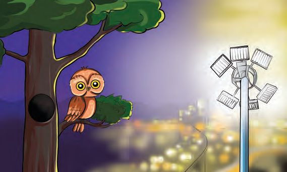
Figure fig_ch04_p078_01 (Page 78)
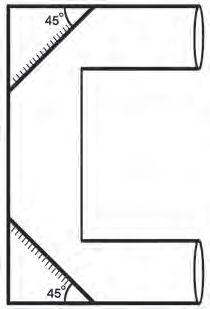
Figure fig_ch04_p078_02 (Page 78)
Basic Science
Discuss how a periscope is useful for the submarines in the Navy and for
soldiers observing enemies from trenches in the battle field.
What if the periscope you have made is similar to the
one as shown in the figure? The view from which part
can be seen? Try to draw the path of light. Construct
the device and examine its working.
We have learnt a lot about light. We cannot imagine a
world without light. Can you believe that excess of
light creates problems for human beings and many
other living organisms?
Even though it is night,
I can’t see anything due to
the intense light on the road.
How can I go out?
Didn’t you notice how worried the owl is? When do owls go out for preying?
How does the intense light at night affect them? Are the owls alone affected
by the artificial light at night?
Light Pollution
Today, we use many sources of light that dispel darkness. You’ve probably
seen in cities and parks neon bulbs and the likes that are kept lit up throughout
the night. This light is harmful to many organisms that hunt for prey in the
dark. They are also the heirs of this earth. Intense illumination at night also
causes people to miss many of the sky views that can only be seen on clear
nights.
Didn’t you realize some problems caused by light pollution? Too much light
at night causes many difficulties for human beings as well as animals. Discuss
them in the class and record in the Science Diary.
78
Page 79
Figure fig_ch04_p079_01 (Page 79)
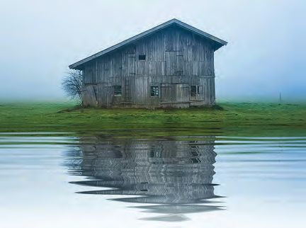
Figure fig_ch04_p079_02 (Page 79)
Class - VII
Let’s Assess
1. Examine the following table and find the odd one out.
Transparent Objects
Translucent Objects
Opaque Objects
• Clear water
• Soil
• Stone
• Air
• Tiles
• Mirror
• Box filled with
smoke
• Turbid water
• Clear water
• Hardboard
• Screen guard of a
mobile phone
• Fog
2. Observe the pictures. Which type of reflections do you see here?
Picture 1
Picture 2
Explain both views based on the reflection of light.
3. Observe the following situations. Find out which type of reflection
takes place in each.
Situation
Reflection
●
Ornaments shine
●
We get light inside the home during day time
●
A polished furniture shines
●
See reflection of trees on stagnant water
79
Page 80
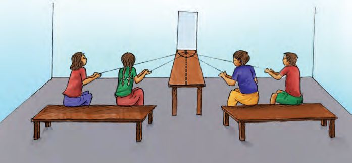
Figure fig_ch04_p080_01 (Page 80)
Basic Science
Extended Activities
Arrange three benches in a room as shown in the figure given below.
Arrange one of them perpendicular to the wall and keep the others at
a particular distance from the wall. Fix a nail on the bench at the end
which touches the wall. Place a mirror vertically behind the nail fixed
on the bench. Mark A, B at equal intervals at one of the benches placed
away from the wall. Similarly mark C, D on the other bench. At the end
of the bench perpendicular to the wall, mark X as shown in the figure.
Make four children sit on the bench at position A, B, C and D. Wrap
a thread around the nail and give the two ends of it to the children in
positions A and D. Similarly, wrap another thread around the nail and
give the ends to the children in positions B and C.
X
A
B
C
D
•
Light a torch on to the mirror through the thread held by child A. Where
does the reflected light fall?
•
Similarly, let child D also light the torch on the mirror. Where does the
reflected light fall?
•
Let the children B and C repeat the activity. Write down your
observations.
•
Where will the reflected light fall, if the torch is lighted on to the mirror
from X?